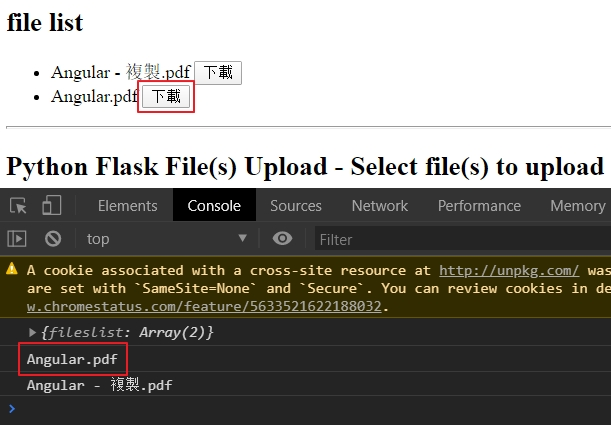

使用Angular 因為專案有使用到，可以使用angular來作上傳的動作，所以來學習一下
先來建立基本架構
加入AngularMateial 1 ng add @angular/material
目前選擇indigo-pink
加入SharedAngularMaterial <https://ithelp.ithome.com.tw/articles/10209937
1 ng g m share\SharedAngularMaterial
在MatIcon中使用Icon Font 1 npm install --save @fortawesome/fontawesome-free
接下來在src\styles.scss中
1 2 3 4 5 6 7 8 9 10 11 12 13 14 15 16 17 18 19 20 21 22 23 24 25 26 27 28 29 30 31 32 33 34 35 36 37 38 39 40 41 42 43 44 45 46 47 48 49 50 51 52 53 54 55 56 57 58 59 60 61 62 63 64 65 66 67 68 69 70 71 72 73 74 75 @import "~@fortawesome/fontawesome-free/css/all.css" ; mat-card{ margin :4px ; } .full-width { width : 100% ; } html , body , app-root,mat-sidenav-container, .site { margin : 0 ; width : 100% ; height : 100% ; } .site { display : flex; flex-direction : column; } main { flex : 1 ; display : flex; flex-direction : column; justify-content : center; align-items : center; margin-top :64px ; } .fill-remaining-space { flex : 1 1 auto; } .mat-raised-button { font-size : 18px ; } .mat-line { font-size : 18px !important ; } .mat-list-base .mat-list-option { font-size : 18px ; } .mat-header-cell { font-size : 14px ; } .mat-cell { font-size : 18px ; } .color1 { background-color : #f80909 ; } .color2 { background-color : #f4f809 ; } .color3 { background-color : #31f809 ; } .color4 { background-color : #0949f8 ; } .color5 { background-color : #c809f8 ; }
建立測試元件 一個上傳檔案，一個是檔案列表
1 2 ng g component pages/Upload ng g component pages/FwFileList
在src\app\pages\fw-file-list\fw-file-list.component.html
1 2 3 <p style ="padding: 13px;" > Angular 8 tutorial & example — How to upload image file with FormData & HttpClient </p >
設定路由 在src\app\app-routing.module.ts
1 2 3 4 5 6 7 8 const routes: Routes = [ { path: '' , redirectTo: 'fwupload' , pathMatch: 'full' }, { path: 'fwupload' , component: UploadComponent }, { path: 'fwfilelist' , component: FwFileListComponent } ]; export class AppRoutingModule { }
設定切換 在src\app\app.component.html
1 2 3 4 5 6 7 8 <mat-toolbar color ="primary" > <h1 > ngImageUpload </h1 > <button mat-button routerLink ="/" > Upload</button > <button mat-button routerLink ="/fwfilelist" > 檔案列表</button > </mat-toolbar > <router-outlet > </router-outlet >
建立上傳服務 1 ng g service fw/_services/upload
在src\app\_services\fw\upload.service.ts
1 2 3 4 5 6 7 8 9 10 11 12 13 14 15 16 17 import { Injectable } from '@angular/core' ;import { HttpClient } from '@angular/common/http' ;@Injectable ({ providedIn: 'root' }) export class UploadService { api = "https://file.io/" ; constructor (private httpClient: HttpClient upload(formData) { return this .httpClient.post<any >(this .api, formData, { reportProgress: true , observe: 'events' }); } }
在src\app\pages\upload\upload.component.html
1 2 3 4 5 6 7 8 9 10 11 12 13 14 15 16 17 18 19 20 21 22 23 24 25 26 27 28 29 <div style ="text-align:center; margin-top: 100px; " > <mat-card style ="margin-top:10px; width: 50%;" > <mat-card-content > <ul > <li *ngFor ="let file of files" > <mat-progress-bar [value ]="file.progress" > </mat-progress-bar > <span id ="file-label" > </span > </li > </ul > </mat-card-content > <mat-card-actions > <button mat-flat-button color ="primary" > <mat-icon > file_upload</mat-icon > Upload <input type ="file" #fileUpload id ="fileUpload" name ="fileUpload" (change )="onFileSelected($event)" style ="opacity: 0; position:absolute; left:0px; top:0px; width:100%; height:100%;" /> </button > </mat-card-actions > </mat-card > </div >
在src\app\pages\upload\upload.component.scss
1 2 3 4 5 6 ul ,li { margin : 0 ; padding : 0 ; list-style : none; }
在src\app\pages\upload\upload.component.ts
1 2 3 4 5 6 7 8 9 10 11 12 13 14 15 16 17 18 19 20 21 22 23 24 25 26 27 28 29 30 31 32 33 34 35 36 37 38 39 40 41 42 43 44 45 46 47 48 49 50 51 52 53 54 55 56 57 58 59 60 61 62 63 64 65 66 67 68 69 70 71 72 73 74 import { Component, OnInit, ViewChild, ElementRef } from '@angular/core' ;import { HttpEventType, HttpErrorResponse } from '@angular/common/http' ;import { of } from 'rxjs' ;import { catchError, map } from 'rxjs/operators' ;import { UploadService } from 'src/app/_services/fw/upload.service' ;@Component ({ selector: 'app-upload' , templateUrl: './upload.component.html' , styleUrls: ['./upload.component.scss' ] }) export class UploadComponent implements OnInit { @ViewChild ("fileUpload" , { static : false }) fileUpload: ElementRef; files = []; constructor (private uploadService: UploadService ngOnInit() { } uploadFile(file) { const formData = new FormData(); formData.append("file" , file.data); file.inProgress = true ; this .uploadService.upload(formData).pipe( map(event => switch (event.type) { case HttpEventType.UploadProgress: file.progress = Math .round(event.loaded * 100 / event.total); break ; case HttpEventType.Response: return event; } }), catchError((error: HttpErrorResponse ) => { file.inProgress = false ; return of(`${file.data.name} upload failed.` ) })).subscribe((event: any ) => { if (typeof (event) === 'object' ) { console .log(event.body); } }); } private uploadFiles() { this .fileUpload.nativeElement.value = "" ; this .files.forEach(file => this .uploadFile(file); }); } onFileSelected(event) { if (event.target.files.length > 0 ) { for (let index = 0 ; index < event.target.files.length; index++) { const file = event.target.files[index]; this .files.push({ data: file, inProgress: false , progress: 0 }); } this .uploadFiles(); } } onClick() { } }
參考資料 Angular 9/8 Tutorial & Example — Upload Files with FormData, HttpClient, RxJS, and Material ProgressBar
前言 因為專案上有使用到檔案的上傳和下載，所以來記錄一下在Python上如何的使用，網路上的範例是以flask加上它回傳的template的html檔來使用。但是我們的專案比較像是web service的方式來處理。
建立基本的架構 參考的程式碼github
先來建立一開始使用的python的web服務器的架構，因為在之前有建立相關的python的結構，所以就直接複制過來使用，包括.vscoe的設定檔
在.vscode\launch.json
1 2 3 4 5 6 7 8 9 10 11 12 13 14 15 16 17 18 19 20 21 22 23 { "version" : "0.2.0" , "configurations" : [ { "name" : "Python: Flask" , "type" : "python" , "request" : "launch" , "module" : "flask" , "pythonPath" : "D:/Project/github/StudyPython/pyvirenv/pyenv37/Scripts/python.exe" , "env" : { "FLASK_APP" : "main.py" }, "args" : [ "run" , "--no-debugger" , "--no-reload" ], "jinja" : true } ] }
在.vscode\settings.json這是訯是虛擬環境的設定
1 2 3 4 { "python.venvPath": "D:\\Project\\github\\StudyPython\\pyvirenv\\pyenv37\\Scripts", "python.pythonPath": "D:\\Project\\github\\StudyPython\\pyvirenv\\pyenv37\\Scripts\\python.exe" }
最簡單的web在main.py
1 2 3 4 5 6 7 8 9 10 11 from flask import Flask, request, redirect, jsonifyapp = Flask(__name__) @app.route('/') def hellworld () : return "hello world" if __name__ == "__main__" : app.run(debug=False )
查看檔案的列表 在main.py
1 2 3 4 5 6 7 8 9 10 11 12 13 14 15 16 17 18 19 20 21 22 23 24 25 26 27 28 29 30 31 32 33 import osimport urllib.requestfrom flask import Flask, request, redirect, jsonifyUPLOAD_FOLDER = 'd:/uploads' app = Flask(__name__) app.secret_key = "secret key" app.config['UPLOAD_FOLDER' ] = UPLOAD_FOLDER app.config['MAX_CONTENT_LENGTH' ] = 256 * 1024 * 1024 @app.route('/files',defaults={'folder': None,'sub_folder': None}, methods=['GET']) def files (folder,sub_folder) : basedir = app.config['UPLOAD_FOLDER' ] directory = '' if folder != None : directory = directory + '/' + folder if sub_folder != None : directory = directory + '/' + sub_folder files = os.listdir(basedir + directory) resp= jsonify({'fileslist' : files}) resp.status_code = 200 resp.headers['Access-Control-Allow-Origin' ] = request.environ['HTTP_ORIGIN' ] return resp if __name__ == "__main__" : app.run(debug=False )
有CORS的問題，可以暫時解決使用在回傳時加入resp.headers['Access-Control-Allow-Origin'] = request.environ['HTTP_ORIGIN']
Client端的設定 可以參考learn-rollup4 的檔案來當作一個骨架來加入設定
在src\index.ts
1 2 3 4 5 6 7 8 9 10 11 12 13 14 15 16 17 18 19 20 21 22 23 24 25 26 27 28 29 30 31 32 33 34 35 36 37 38 39 40 41 42 import axios from 'axios' ;class Engine { private static _instance: Engine; private constructor ( public static getInstance(): Engine { if (this ._instance == null ) { this ._instance = new Engine(); } return this ._instance; } private _appid: string = "" ; init(appid: string ) { this ._appid = appid; } showAppid() { console .log('appid=' + this ._appid); } getFilelist(callback: (ent: any ) => void ) { axios.get('http://127.0.0.1:5000/files' ) .then((res ) => { console .log(res.data); if (callback != null ) callback(res.data.fileslist) }) .catch((err ) => { console .log(err); console .log(err.response); }) } } export default Engine;
在dist\index.html要加入使用的程式庫axios和jquery接下來在加入自已編譯好的index.js
1 2 3 4 5 6 7 8 9 10 11 12 13 14 15 16 17 18 19 20 21 22 23 24 25 26 27 28 29 30 31 32 33 34 35 36 37 38 39 40 41 42 43 44 45 46 <!DOCTYPE html> <html lang ="en" > <head > <meta charset ="UTF-8" > <meta name ="viewport" content ="width=device-width, initial-scale=1.0" > <meta http-equiv ="X-UA-Compatible" content ="ie=edge" > <title > Document</title > <script type ="text/javascript" src ="https://code.jquery.com/jquery-3.4.1.min.js" > </script > <script src ="https://unpkg.com/axios/dist/axios.min.js" > </script > <script src ="index.js" > </script > </head > <body > <h2 > file list</h2 > <ul > </ul > <hr /> <h2 > Python Flask File(s) Upload - Select file(s) to upload</h2 > <dl > <p > <p id ="msg" > </p > <input type ="file" id ="multiFiles" /> <button id ="upload" > Upload</button > </p > </dl > <script > let m = monitor.getInstance(); m.getFilelist((res ) => { res.forEach(element => $("ul" ).append(`<li>${element} <button onclick="filedownload('${element} ')">下載</button></li>` ) }); }); function filedownload (params) console .log(params); } </script > </body > </html >
在畫面上會列出在D:\uploads下的所有檔案列表，在點擊下載按鈕，在console的畫面會顯示檔案名稱

上傳檔案 目前是上傳的檔案會放在D:\uploads下面
在client的html裏要宣告<input type="file" id="file" />在從裏面將要上傳的檔案來取出，可以有兩種取法，一是使用Jquery，一是使用原生的document.getElementById，可以取得屬性
1 2 3 4 5 6 7 8 <h2 > Python Flask File Upload - Select file to upload</h2 > <dl > <p > <p id ="msg" > </p > <input type ="file" id ="file" /> <button id ="upload" > Upload</button > </p > </dl >
1 2 3 4 let file_dataa = document .getElementById('file' ).files[0 ];console .log(file_dataa);let file_data = $('#file' ).prop('files' )[0 ]console .log(file_data);
上傳的dist\index.html
1 2 3 4 5 6 7 8 9 10 11 12 13 14 15 16 17 18 19 20 21 22 23 24 25 26 27 28 29 30 31 32 33 34 35 36 <script > let m = monitor.getInstance(); m.getFilelist((res ) => { res.forEach(element => $("ul" ).append(`<li>${element} <button onclick="filedownload('${element} ')">下載</button></li>` ) }); }); function filedownload (params) console .log(params); } $(document ).ready(function (e ) console .log("ready" ); $('#upload' ).on('click' , function ( let form_data = new FormData(); let file_data = $('#file' ).prop('files' )[0 ] if (file_data == null ) { $('#msg' ).html('<span style="color:red">Select at least one file</span>' ); return ; } form_data.append('file' , file_data); m.upload(form_data); }); }); function onUploadProgress (params) console .log(params); } </script >
在src\index.ts的上傳的功能
1 2 3 4 5 6 7 8 9 10 11 12 13 14 15 16 17 18 19 20 21 22 23 24 25 26 27 28 29 30 31 32 33 34 35 36 37 38 39 40 41 42 43 import axios from 'axios' ;class Engine public static getInstance(): Engine { } getFilelist(callback: (ent: any ) => void ) { } upload(formdata: any, callback : (ent: any ) => void ) { axios.post('http://127.0.0.1:5000/file-upload' , formdata, { headers: { 'Content-Type' : 'multipart/form-data' }, transformRequest: [function (data ) return data; }], onUploadProgress: function (e ) var percentage = Math .round((e.loaded * 100 ) / e.total) || 0 ; if (percentage < 100 ) { console .log(percentage + '%' ); } if (callback != null ) { callback(percentage); } } }) .then(res => console .log(res.data); }) ; } } export default Engine;
下載檔案 在每個檔案的列表的後面加入一個下載的按鈕
在main.py
1 2 3 4 5 6 7 8 9 10 11 12 13 14 15 16 from flask import Flask, request, redirect, jsonify, send_file@app.route('/file-download/<filename>',methods=['GET','POST']) def downloadFile (filename) : path= app.config['UPLOAD_FOLDER' ]+'/' +filename resp = jsonify({'filename' : filename}) resp.status_code = 200 return send_file(path, as_attachment=True ) if __name__ == "__main__" : app.run(debug=False )
在下載的htmldist\index.html
1 2 3 4 5 6 7 8 9 10 11 12 13 14 15 16 17 18 19 20 21 22 23 24 25 26 27 28 29 30 31 32 33 34 35 36 37 38 39 40 41 42 43 44 <!DOCTYPE html> <html lang ="en" > <head > </head > <body > <h2 > file list</h2 > <ul > </ul > <hr /> <h2 > Python Flask File Upload - Select file to upload</h2 > <dl > <p > <p id ="msg" > </p > <input type ="file" id ="file" /> <button id ="upload" > Upload</button > </p > </dl > <script > let m = monitor.getInstance(); m.getFilelist((res ) => { }); function filedownload (params) console .log(params); m.download(params); } function onDownloadProgress (params) console .log(params); } $(document ).ready(function (e ) }); </script > </body > </html >
在src\index.ts
1 2 3 4 5 6 7 8 9 10 11 12 13 14 15 16 17 18 19 20 21 22 23 24 25 26 27 28 29 30 31 32 33 34 35 36 37 38 39 40 41 42 import axios from 'axios' ;class Engine { download(dwfilename: any , callback: (ent: any ) => void ) { axios.get('http://127.0.0.1:5000/file-download/' + dwfilename, { headers: { 'Content-Type' : 'application/json' , }, responseType: 'arraybuffer' , transformRequest: [function (data ) return data; }], onDownloadProgress: function (e ) var percentage = Math .round((e.loaded * 100 ) / e.total) || 0 ; if (percentage < 100 ) { } if (callback != null ) { } } }).then(res => console .log(res); let blob = new Blob([res.data]); let link = document .createElement("a" ); let evt = document .createEvent("HTMLEvents" ); evt.initEvent("click" , false , false ); link.href = URL.createObjectURL(blob); link.download = dwfilename; link.style.display = "none" ; document .body.appendChild(link); link.click(); window .URL.revokeObjectURL(link.href); }); } } export default Engine;
參考資料 使用axios一次上传多张图片，自带上传进度
Flask下载文件
Getting Started with Axios
axios前后端分离下载文件
CORS
Python Flask File Upload Example